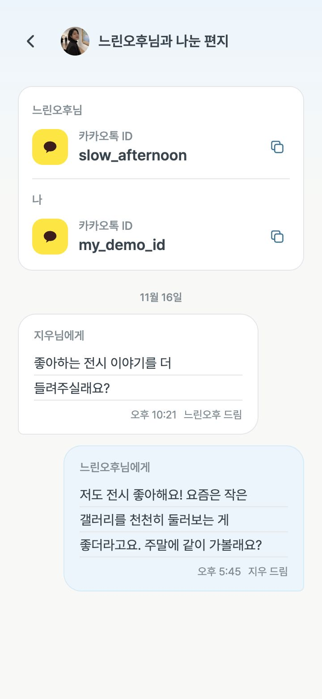
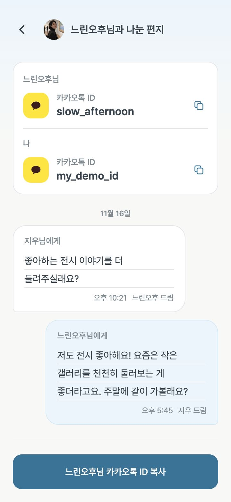
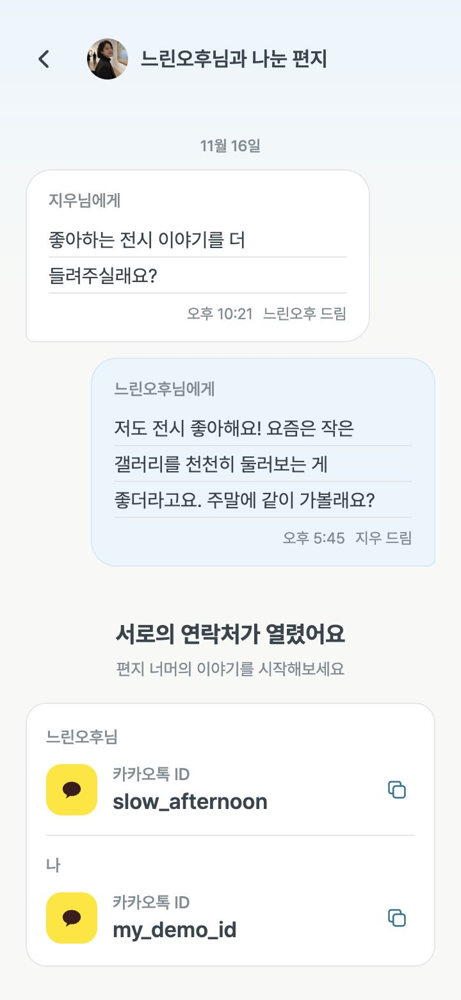
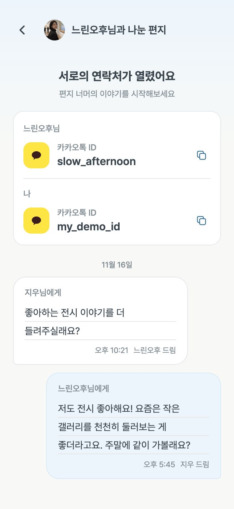
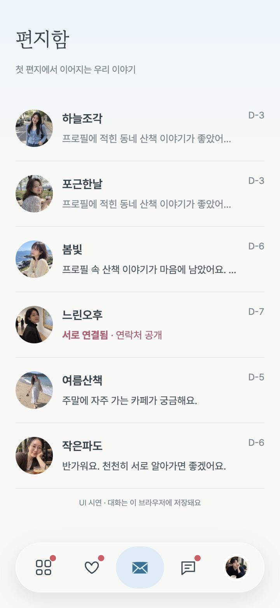
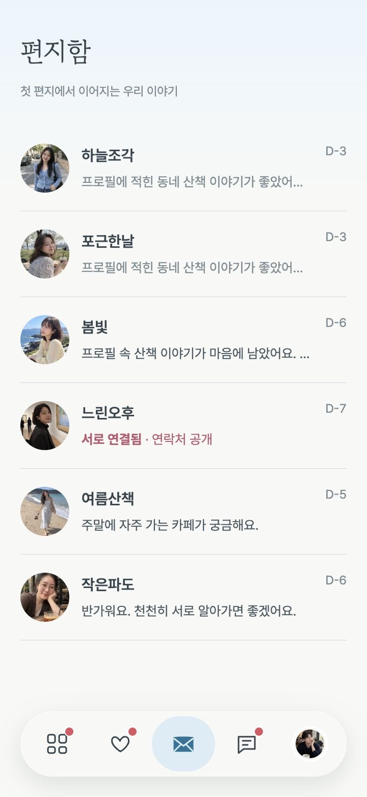
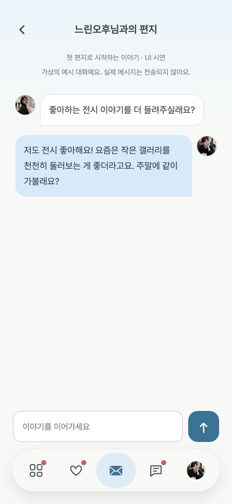
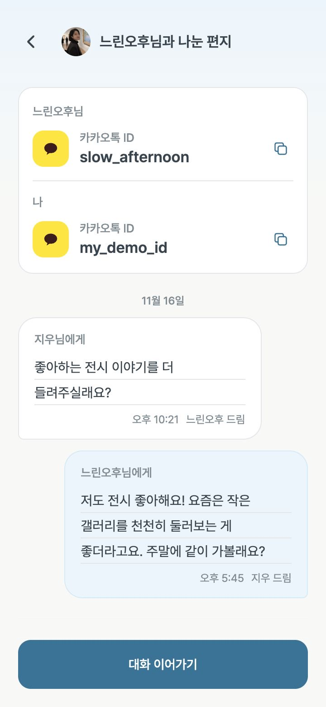

편지함 · 앱 안 채팅 없애기
- 피드백: 야화 안에서는 채팅하지 않아요. 편지 한 통과 답장 한 통으로 서로의 연락처를 받고, 대화는 카카오톡 · 전화로 밖에서 해요.
- 모든 안 공통: 연결된 편지를 누르거나 답장을 보낸 뒤에는 채팅 화면이 아니라 편지 화면(두 사람의 편지 + 서로의 연락처 + 복사)으로 가요. 채팅 화면과 입력창은 없애요.
- 고를 것: "대화 이어가기" 버튼 자리를 어떻게 할지, 연락처를 위에 둘지 아래에 둘지.
연결된 편지 화면

C1버튼만 빼기 · 지금 화면에서 "대화 이어가기"만 없앴어요. 연락처 위, 편지 아래

C2아래 버튼을 복사로 · "느린오후님 카카오톡 ID 복사". 밖에서 이어가는 첫 동작을 크게

C3편지 먼저, 연락처는 끝에 · 편지 두 통 → "서로의 연락처가 열렸어요" → 연락처. 편지를 읽고 내려오면 연락처가 나와요

C4맨 위에 한 줄 · "서로의 연락처가 열렸어요" → 연락처 → 편지. 팀 링크와 같은 순서
편지함 목록
연결된 편지는 지금처럼 "서로 연결됨 · 연락처 공개"로 보여요. 맨 아래 "UI 시연 · 대화는 이 브라우저에 저장돼요"만 빼요.

지금맨 아래 "대화는 이 브라우저에 저장돼요"

바꾼 뒤아래 문구 없음
지금

지금연결된 편지를 누르면 "느린오후님과의 편지" 채팅 화면 + 입력창

지금편지 화면 아래 "대화 이어가기" → 채팅으로 가요